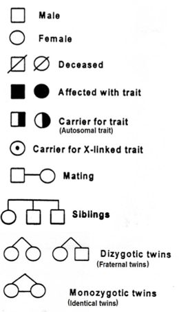
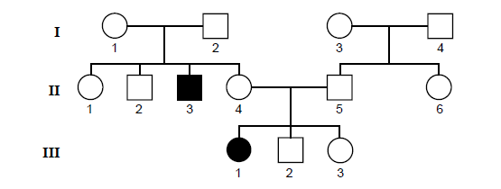
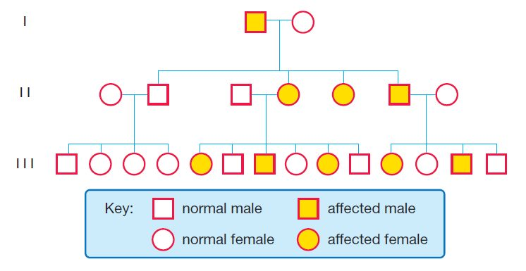
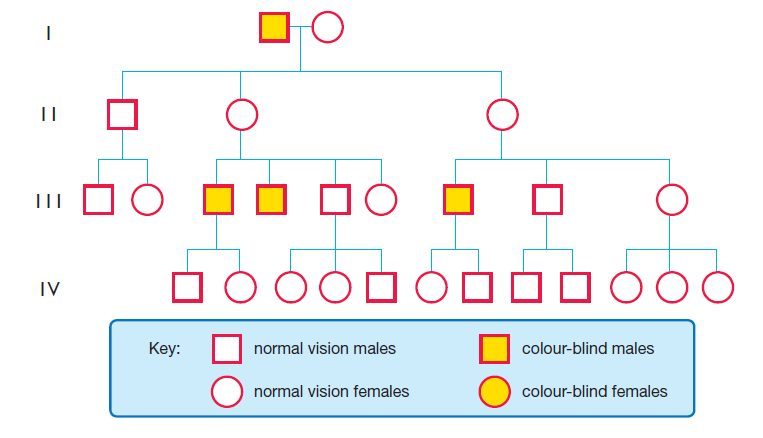
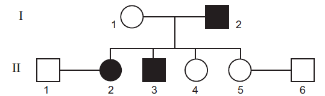
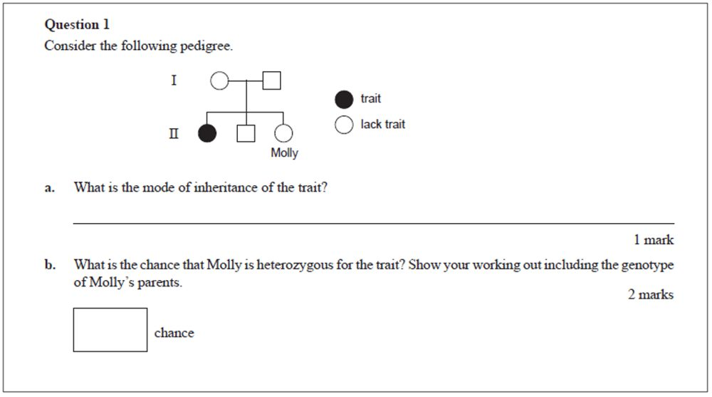

What is a pedigree?
A pedigree is a diagram of a family's relationships that uses symbols for people and lines for genetic relationships. It shows how a trait or disorder is inherited over several generations. Pedigrees let us work out:
- whether a trait is caused by a dominant or recessive allele
- whether inheritance is autosomal or sex-linked.
We use pedigrees to study human inheritance because humans reproduce slowly, in small numbers, and object to deliberate "crosses"!
Pedigree symbols
- Males are squares; females are circles.
- Affected individuals are shaded (filled); unaffected are clear.
- Carriers may be half-shaded or have a dot (but carriers of autosomal recessive disorders aren't always shown).
- A horizontal line joining a male and female is a mating; their children hang below in birth order.
- Generations are numbered with Roman numerals (I, II, III) and individuals with numbers (II3 is the third person in generation II).

Reading a pedigree
- Dominant or recessive? If a trait is dominant, an affected child must have an affected parent. If it is recessive, neither parent needs to show it, because both could be heterozygous carriers, so it can skip generations.
- Autosomal or X-linked? In X-linked recessive traits, many more males are affected. In autosomal traits, males and females are affected about equally.
| Mode of inheritance | Pattern in the pedigree |
|---|---|
| Probably autosomal | Males and females affected about equally |
| Recessive | Often skips a generation (might not, if recessive alleles are common) |
| Dominant | Affected individuals in every generation; every affected child has an affected parent |
| X-linked recessive | Mostly males affected; mothers of affected sons tend not to be affected |
| X-linked dominant (not in Y10) | All daughters of an affected father are affected |
Examples



Practice problems
Phenylketonuria is an autosomal recessive condition (N = normal, n = PKU). The shaded individuals have the disorder. a. What are the genotypes of I1 and I2? b. Which other genotypes do you know? c. Give evidence that this is an autosomal recessive condition.
- I1 and I2 are both Nn. They are unaffected but have an affected son (II3, nn), so each must carry one n allele.
- The affected individuals II3 and III1 are nn. III1's unaffected parents (II4 and II5) must both be Nn. Other unaffected individuals are NN or Nn.
- Recessive: two unaffected parents have affected children (it skips a generation). Autosomal: an affected female (III1) has an unaffected father; if it were X-linked recessive, her father would have to be affected. Males and females are both affected.
Colour blindness is X-linked recessive (XB = normal, Xb = colour-blind). The shaded individuals are colour-blind. a. Annotate the known genotypes. Can you determine every individual's genotype? b. Predict the offspring of II5 and II6.

- Yes, all can be determined. I2 (affected male): XbY. II2 (affected female, XbXb) got an Xb from each parent, so I1 (unaffected) must be a carrier, XBXb. II3 (affected male): XbY. II4 and II5 (unaffected daughters of an affected father) must have received Xb from him, so they are carriers: XBXb. II1 and II6 (unaffected males): XBY.
- II5 (XBXb) × II6 (XBY) gives 1 XBXB : 1 XBXb : 1 XBY : 1 XbY. All daughters have normal vision (half are carriers), and each son has a 50% chance of being colour-blind.
VCE exam question: pedigree analysis

What is the mode of inheritance of the trait?
Two parents without the trait have a daughter with it, so it is recessive. An affected daughter of an unaffected father rules out X-linked recessive. (In the exam, "recessive" alone or "X-linked recessive" didn't get the mark: only 71% of students got it right.)
What is the chance that Molly is heterozygous for the trait? Give your answer as a fraction.
Molly's parents are both , so Molly's chance of being heterozygous is .
Both parents are heterozygous (Tt × Tt), giving TT, Tt, Tt and tt. Molly doesn't have the trait, so she can't be tt. Of the remaining three possibilities (TT, Tt, Tt), two are heterozygous: a chance of 2/3. (Only 15% of students got full marks.)